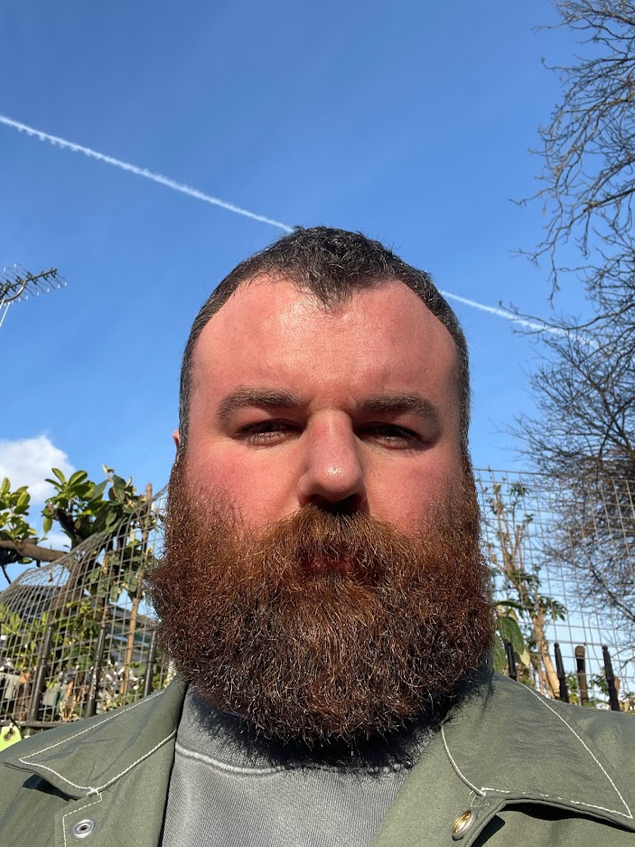

About Me
I was inspired to study Marketing Management in Manchester, after one summer in high-school spent watching American shopping channels. Their distinctly enthuastic approach to selling products had me hooked.
After graduating, I developed deep channel experience at a large global agency, learning the fundamentals over a range of verticals. By the end of my time in this role I was managing a team across numerous verticals.
Eurostar, one of the agency clients, invited me to join their team. Here, I developed beyond performance, into brand building, offline buying, econometrics, full service agency pitches, organisational strategy and partnering with Product & Revenue teams.
Following pandemic-related redundancy, I quickly started freelancing, working with agencies and for the first time, start-ups. One of those start-ups turned into a two year project to help establish their media function and kick-start audience & revenue targets.